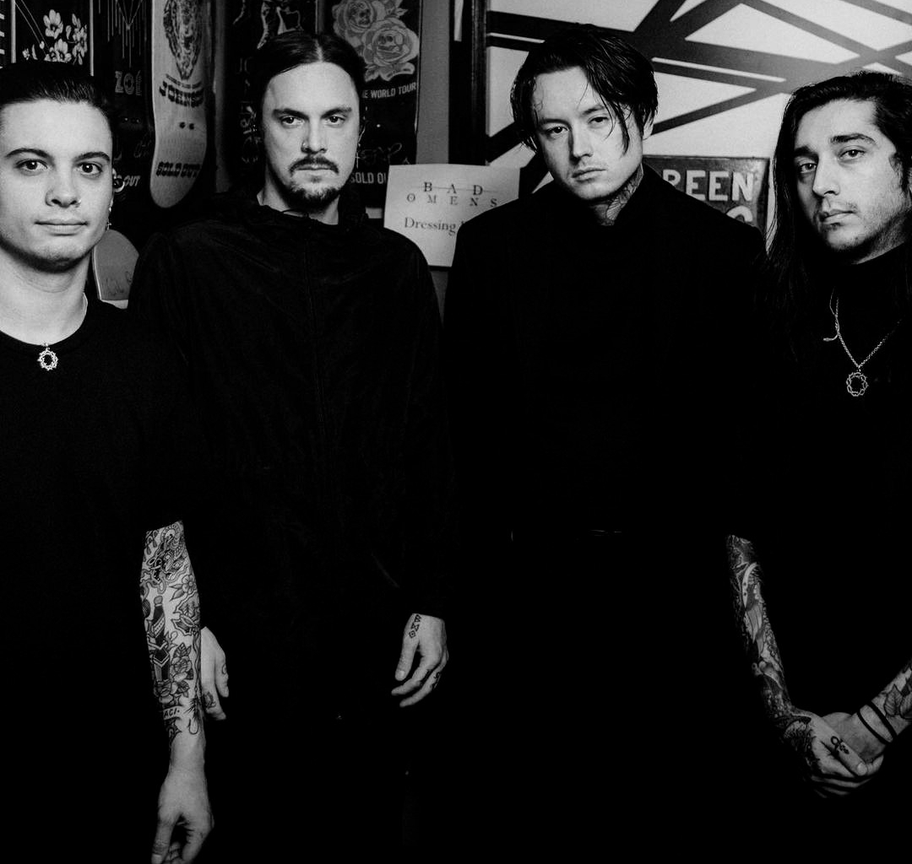
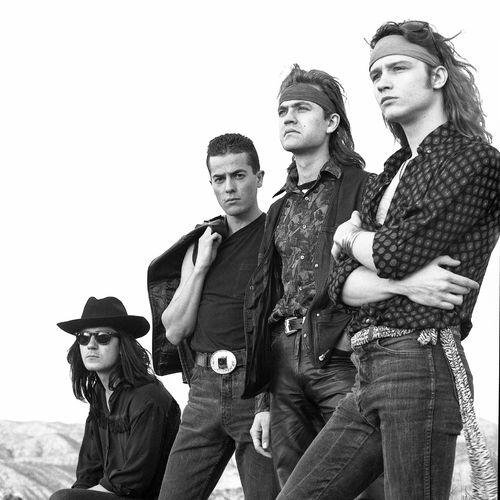
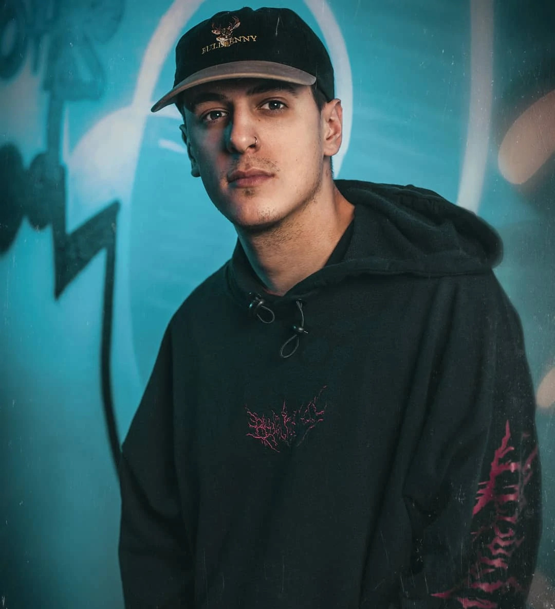

Cómo votar
Dirígete a la sección votar. Llena el formulario con tu nombre, la canción y el puesto correspondiente.
-

Bad Omens
Bad Omens es una banda estadounidense de metalcore formada en 2015 en Richmond, Virginia, fundada por el vocalista Noah Sebastian, el guitarrista Nicholas Ruffilo y el bajista Vincent Riquier. La banda luego agregó al guitarrista Joakim "Jolly" Karlsson y al baterista Nick Folio, lanzando su álbum debut homónimo aclamado por la crítica en 2016 junto a Sumerian Records.
-

Héroes del Silencio
Héroes del Silencio (a veces abreviado Héroes o por sus iniciales HDS) fue un grupo español de rock radicado en Zaragoza, formado inicialmente por Juan Valdivia (guitarra solista) y Enrique Bunbury (voz y guitarra rítmica), y completado con Joaquín Cardiel (bajo) y Pedro Andreu (batería), a mediados de los años 80.
-

Acru
Agustín Cruz (San Miguel de Tucumán, Tucumán, Argentina; 4 de junio de 1997), conocido artísticamente como Acru es un cantante, rapero, compositor y freestyler argentino. Acru comenzó a hacerse un nombre en la escena del rap argentino a partir de 2014, en el que lanzó su primer sencillo, llamado «Viejita Mía»